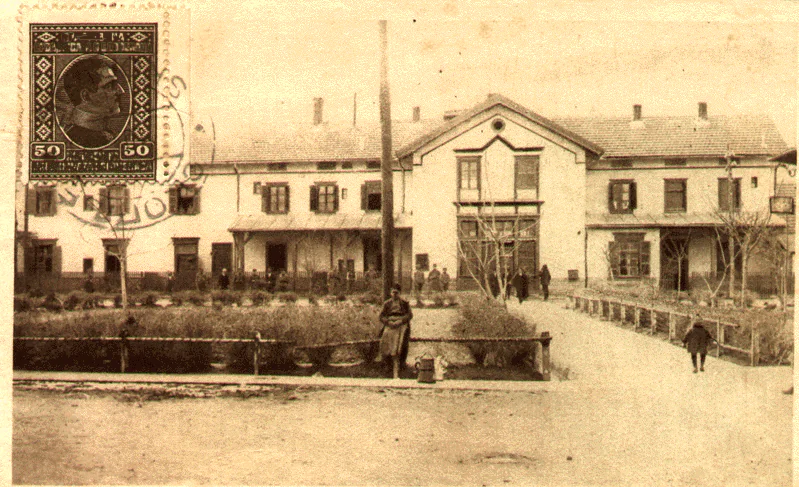

Tren geliyor
- Senaryo ve yönetmen
- Trajče Popov
- Kameraman
- Branko Mihajlovski
- Yıl
- 1951
- Süre
- 00:09

Osmanlı İmparatorluğu döneminde 1873'te yapılan, 19. yüzyılın sonundan kalma eski tren garı. Kartpostalda garın ana girişi ve arkasındaki raylar görülüyor. Mimarisinde neoklasik özellikler var. Ön planda süt ürünleri satan bir kadın.

Osmanlı İmparatorluğu döneminde 1873'te yapılan, 19. yüzyılın sonundan kalma eski tren garı. Kartpostalda garın ana girişi ve arkasındaki raylar görülüyor. Mimarisinde neoklasik özellikler var.

İlk tren garı. Arka taraftan fotoğraflandı. (20. yüzyılın başı)

Arka taraftan eski tren garı. (20. yüzyılın başı)

"Yeni tren garı" - inşaatına 1937'de başlandı. Peron bitmemiş ve sütunlardaki işler tamamlanmamış olsa da 1 Aralık 1940'ta açıldı. Modern biçimleri ve Bizans, Romantik ve halk biçimlerini yorumlayışıyla dikkat çeker. 26 Temmuz 1963'teki yıkıcı depremde üçte ikisi çöktü. Kalan üçte biri onarıldı ve bugün Üsküp Şehir Müzesi'ne ev sahipliği yapıyor. Bugün bina 26 Temmuz 1963 depreminin bir anıtıdır. Müze girişinin üzerindeki durmuş saat, 26 Temmuz 1963'ün trajik anı olan 5.17'yi gösteriyor.

İkinci Dünya Savaşı sırasında tren garı.

İkinci Dünya Savaşı'ndan sonra tren garı (bugünkü Üsküp Şehir Müzesi), ana giriş tarafından.

İkinci Dünya Savaşı'ndan sonra tren garı (bugünkü Üsküp Şehir Müzesi), peronlar tarafından.

Tren garının peronu - 1940.

İnşaat halindeki tren garı - arkadan fotoğraflandı - 1940'lar.

İnşaat halindeki tren garı - önden fotoğraflandı - 1940'lar.

Dört fotoğrafla Üsküp'teki tren garlarının tarihini gösteren kolaj kartpostal.

Yeni ulaşım merkezi. (1980'ler)


 Su kemeri4 kartpostal
Su kemeri4 kartpostal Kale30 kartpostal
Kale30 kartpostal Köprüler60 kartpostal
Köprüler60 kartpostal Rıhtım58 kartpostal
Rıhtım58 kartpostal Meydan46 kartpostal
Meydan46 kartpostal Binalar66 kartpostal
Binalar66 kartpostal Hristiyan kiliseleri19 kartpostal
Hristiyan kiliseleri19 kartpostal İslami yapılar33 kartpostal
İslami yapılar33 kartpostal Subaylar Evi29 kartpostal
Subaylar Evi29 kartpostal Tiyatro28 kartpostal
Tiyatro28 kartpostal Tren garı13 kartpostal
Tren garı13 kartpostal Okullar36 kartpostal
Okullar36 kartpostal Parklar12 kartpostal
Parklar12 kartpostal Pazarlar18 kartpostal
Pazarlar18 kartpostal Sokaklar38 kartpostal
Sokaklar38 kartpostal Panorama I60 kartpostal
Panorama I60 kartpostal Panorama II30 kartpostal
Panorama II30 kartpostal Kolajlar55 kartpostal
Kolajlar55 kartpostal Seller9 kartpostal
Seller9 kartpostal Deprem27 kartpostal
Deprem27 kartpostal Üsküp 200026 kartpostal
Üsküp 200026 kartpostal